Paso 1: Configuración da rede
Vamos comezar por configurar as compoñentes da rede VPC que van proporcionar a capa básica de aillamento, seguridade e alta dispoñibilidade ás demais compoñentes da arquitectura que vamos despregar. Vaise crear o seguinte:
- Unha rede VPC na que despregaremos as demais compoñentes da arquitectura.
- Subredes públicas e privadas para as capas da arquitectura.
- Un gateway para a conexión á Internet da VPC.
- Gateways NAT para o acceso a Internet desde as subredes privadas.
- Táboas de roteamento para configurar o tráfico de rede entre as subredes e os gateways.
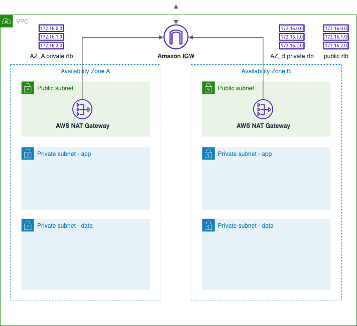 Imaxe: compoñentes da VPC.
Crea a VPC
- Desde a consola de AWS, accede ao servizo VPC.
- No panel do servizo VPC, escolle a opción para crear unha nova VPC.
-
No asistente para crear a VPC, indica as opcións seguintes:
- Recursos a crear: VPC e moito máis
- Etiqueta do nome: deixa activa a opción para xerala automaticamente e pon as tuas iniciais seguidas do curso académico, p.ex. xcpm2223
- Bloque CIDR IPv4: no segundo campo da IP pon as 2 últimas cifras do teu DNI, p.ex. 10.40.0.0/16
- Número de AZ: 2
- Número de sub-redes públicas: 2
- Número de sub-redes privadas: 4
- Gateways NAT: 1 por AZ
- Endpoints da VPC: Ningún
- Opcións de DNS: desactiva a opción Habilitar nomes de host DNS
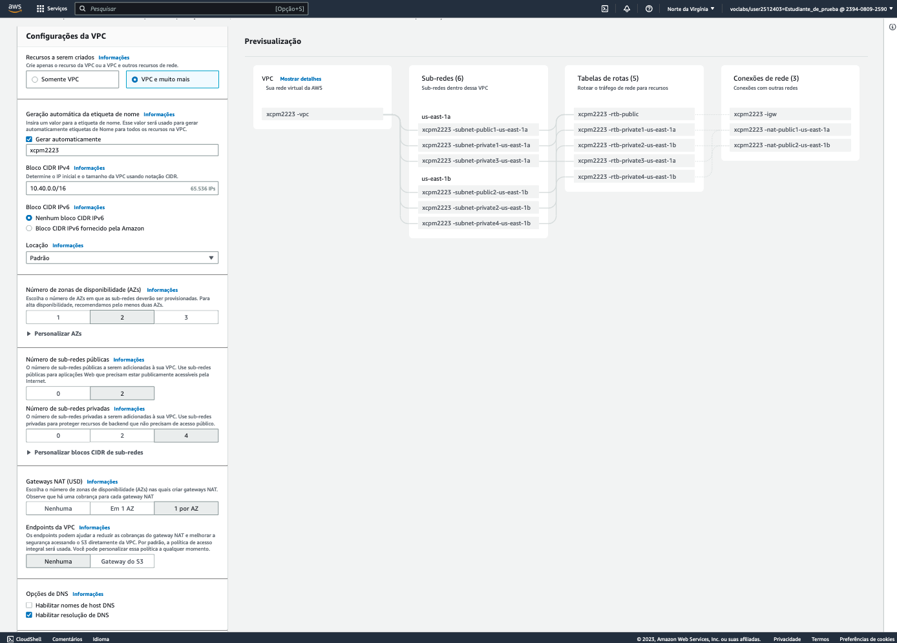 Imaxe: configuración da VPC.
Revisa a VPC creada
Vamos agora revisar a configuración das diferentes compoñentes que se crearon na VPC e modificar o que sexa preciso.
Subredes
Comproba o seguinte:
- Que hai seis subredes na VPC distribuídas en dúas zonas de dispoñibilidade, unha pública e 2 privadas en cada AZ.
- Que os bloques CIDR das subredes son subconxuntos do bloque CIDR da VPC e as IP que hai dispoñíbeis en cada subrede e no total.
O que fai que unha subrede sexa pública ou privada é a táboa de roteamento á que estea asociada. Unha subrede pública terá asociada unha táboa que encamiñe o tráfico da subrede a un gateway de Internet. Unha subrede privada terá asociada unha táboa que o encamiñe a un gateway NAT.
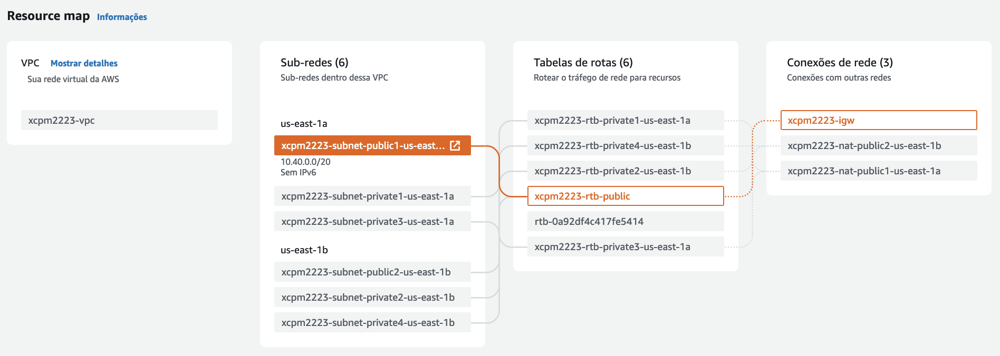 Imaxe: subrede pública con saída a Internet a tráves do gateway de Internet.
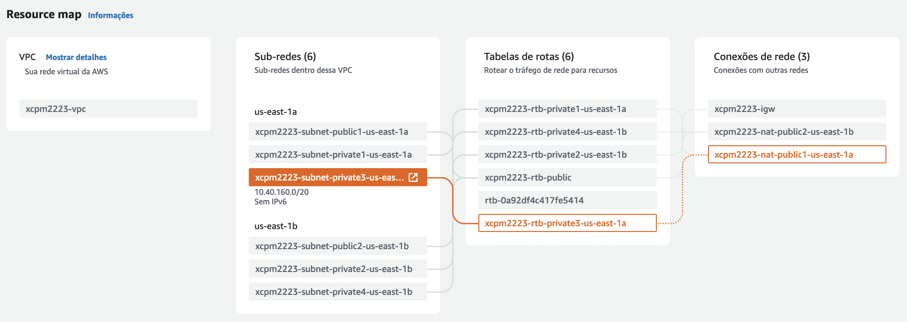 Imaxe: subrede privada con saída a Internet a través dun gateway NAT.
Gateways
Comproba que se crearon os seguintes gateways na VPC:
- Un gateway de Internet É o compoñente da VPC que proporciona acceso público a Internet encargándose de converter os enderezos de rede (NAT) das instáncias con enderezos IP públicos. É un compoñente altamente dispoñíbel, redundante e escalado horizontalmente.
- Dous gateways NAT públicos
Os gateways NAT públicos proporcionan acceso a Internet ás instáncias despregadas nas subredes privadas e impeden as conexións desde Internet a esas instancias. Este tipo de gateways NAT teñen que ter un enderezo IP elástico asociado e requiren que a VPC na que están, teña asociado un gateway de Internet. Consulta a documentación de AWS para saber máis sobre a diferenza entre gateways NAT públicos e privados.
Para ter alta dispoñibilidade, despregouse un gateway NAT público en cada subrede pública. Comproba en cada gateway NAT o enderezo IP elástico que ten asociado (a IP pública do gateway) e a subrede na que está despregado.
Nota
Os gateways NAT son un dos poucos compoñentes dunha VPC polos que AWS cobra. O prezo depende das horas de uso e dos GB procesados polo gateway.
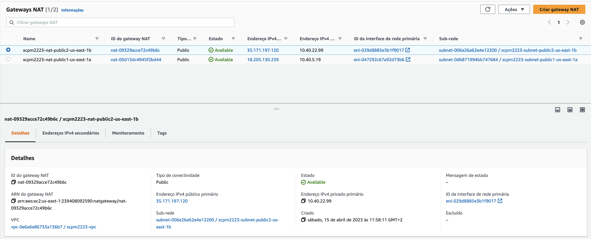 Imaxe: gateway NAT público con IP elástica "35.171.197.120" na subrede "subnet-006e26a62e4e12200/xcpm2223-subnet-public2-us-east-1b".
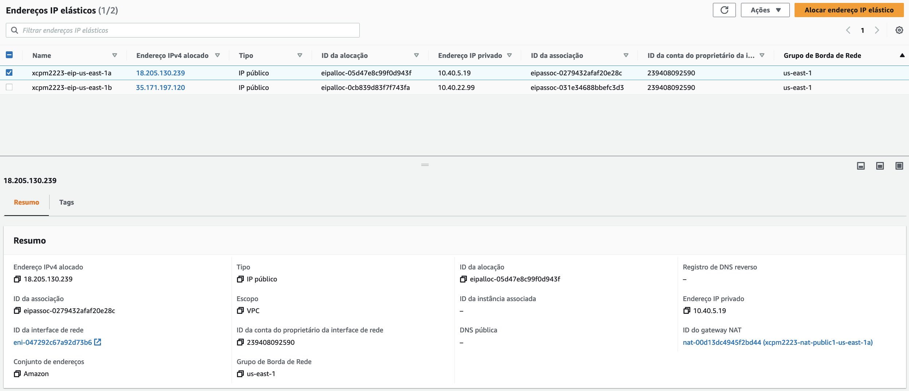 Imaxe: enderezos IP elásticos asociados aos gateways NAT.
Táboas de roteamento
Comproba as asociacións a subredes e rotas das táboas de roteamento que se crearon:
- A táboa asociada ás subredes públicas encamiña o tráfico dirixido fora da VPC para o gateway de Internet.
- As táboas asociadas ás subredes privadas encamiñan o tráfico dirixido fora da VPC para o gateway NAT da respectiva zona de dispoñibilidade.
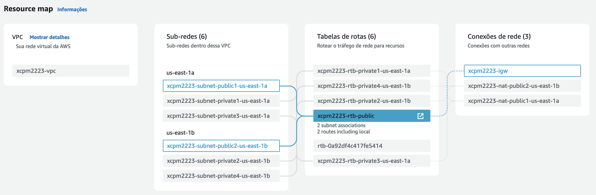 Imaxe: táboa de roteamento asociada ás subredes públicas.
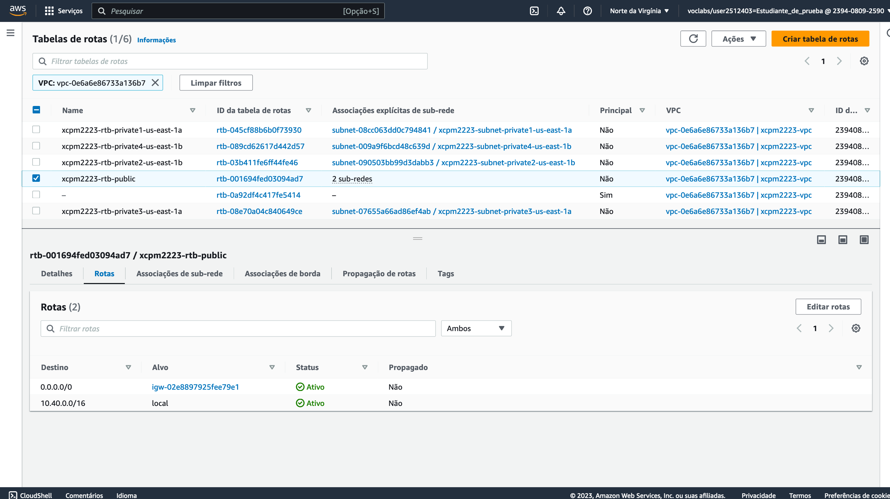 Imaxe: rotas na táboa de roteamento asociada ás subredes públicas.
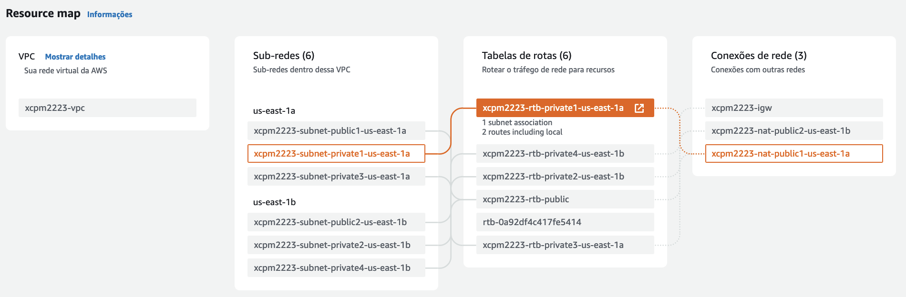 Imaxe: táboa de roteamento asociada a unha subrede privada.
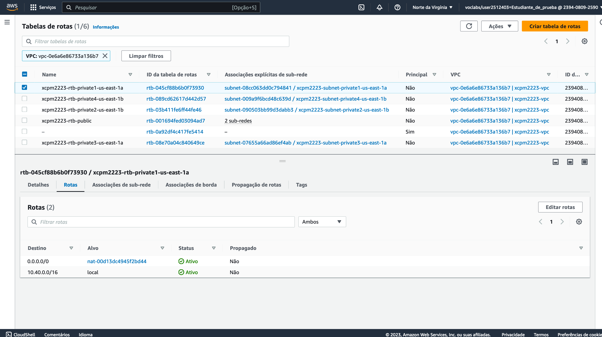 Imaxe: rotas nunha táboa de roteamento asociada a unha subrede privada.
Fíxate que as dúas táboas asociadas ás subredes privadas que están nunha mesma AZ fan o mesmo: o tráfico dirixido fora da VPC é encamiñado cara ao gateway NAT que está nesa mesma AZ. Polo tanto, como as rotas son as mesmas, podemos reducir o número de táboas de roteamento asociadas a subredes privadas, deixando só unha en cada AZ. Faino da seguinte maneira:
- En cada AZ, escolle unha das táboas de roteamento que encamiña o tráfico ao gateway NAT desa AZ e asóciaa ás dúas subredes privadas da AZ (a unha delas xa o estará). Elimina a outra táboa. Nas seguintes figuras amósase o estado antes e despois dos trocos nunha das AZ.
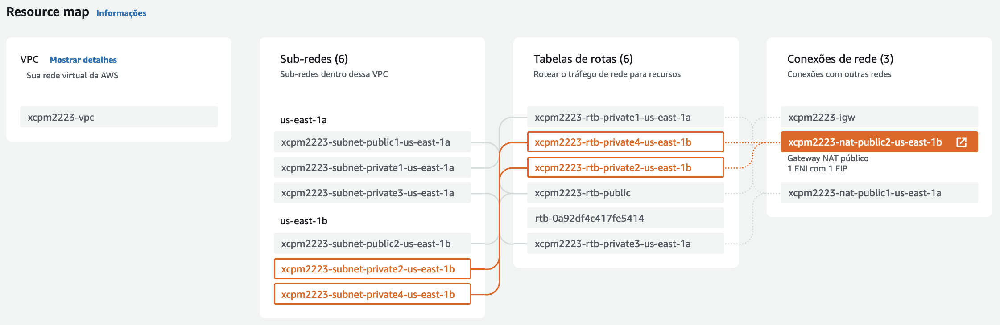 Imaxe: rotas das subredes privadas nunha das AZ antes dos trocos.
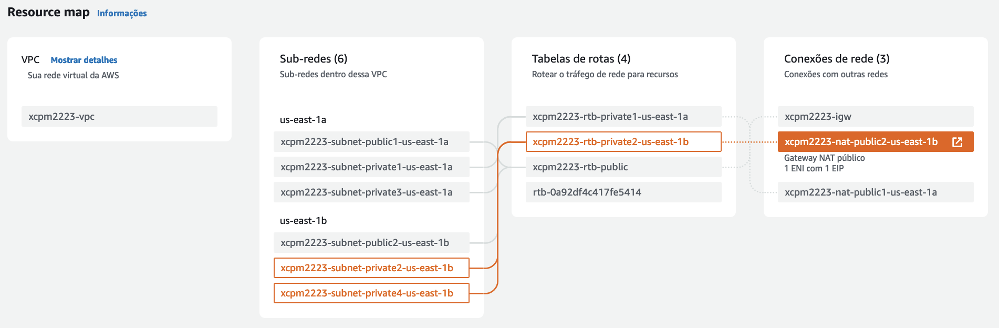 Imaxe: rotas das subredes privadas na mesma AZ despois dos trocos.